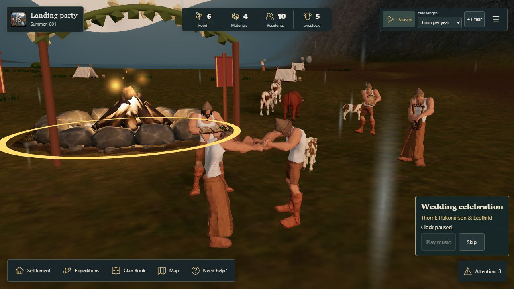
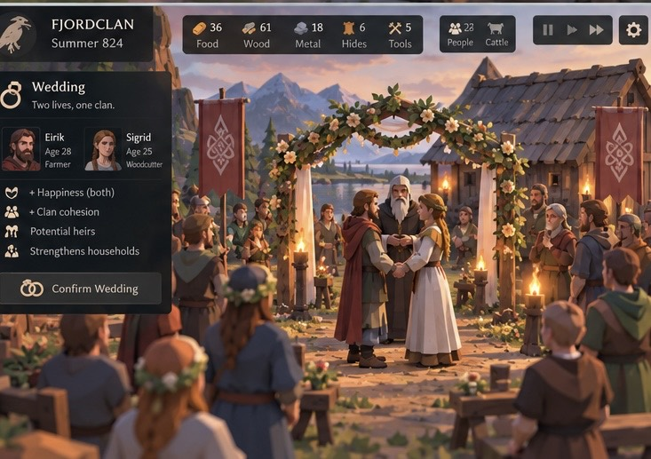

Firelight Vow · Wedding cinematic
Real residents, existing wedding rules and garland. The owner-selected track lasts about 30 seconds. Music streams through the existing audio owner; the film has no additional cost.
- Export your campaign if needed. Download the genuine wedding checkpoint. Choose Recover or import a campaign → Import campaign, then Continue campaign.
- If sound was already on, Continue should activate it without revisiting Sound. If muted, enable it once. Select the campfire → Occasion → Wedding celebration → Support gathering. Sponsor the real wedding for 24 Food + 1 Material in this checkpoint, exactly once.
- Start the clock. Residents run to the campfire. The camera sequence and music start after the staged group arrives. The oldest eligible recorded guest officiates; other residents play lyre, flute and frame drum, then clap. The couple joins hands, the bride wears the supplied flower crown and the officiant holds the open book.
- If audio is blocked, use Play music. Test pause/resume, Skip/Escape, another HUD task and backgrounding. Camera, tools, sound and activities should restore without another payment.
- Please review on a physical iPhone in landscape. Keep the existing low-poly faces and accepted garland; the reference guides composition and adds no gameplay effects.
Production composition

Updated after owner feedback: lower camera, joined hands, crown and book, automatic music and saved sound restoration. Staging takes about 25–26 seconds in the physical fixture. Please recheck sound after a full reload on your iPhone/iPad.
Owner reference
